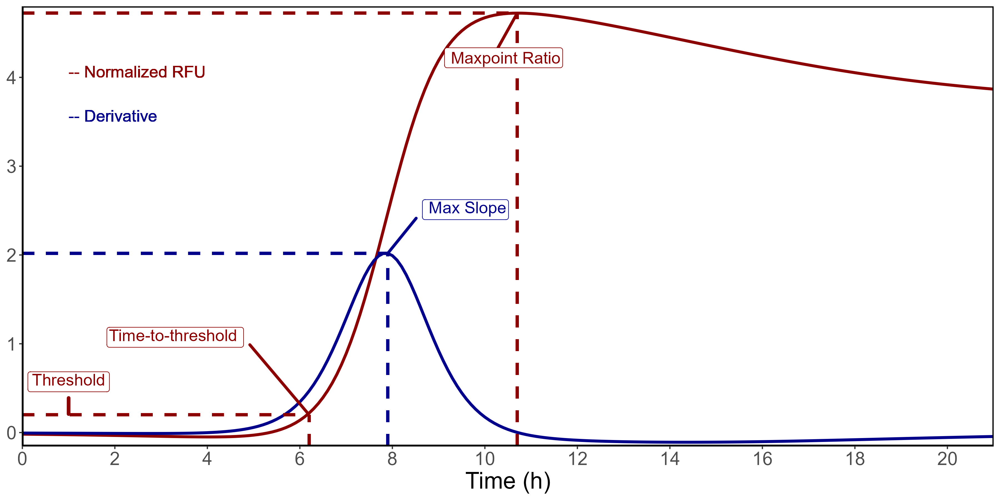

![]()
BMG_format(sample_file, write_file = TRUE)quicR: An R Library for Streamlined Data Handling of Real-Time Quaking Induced Conversion Assays
Abstract
Real-time quaking induced conversion (RT-QuIC) has quickly become an emerging diagnostic tool for protein misfolding disorders such as Creutzfeldt-Jakob disease and Parkinson’s disease. Given that the technology is still relatively new, academic and industry standards for cleaning data and analyzing results have yet to be fully established. The open source R library, quicR, was developed to fill this lack of standardization. This library provides functions, which can be easily integrated into existing R workflows, for data curation, analysis, and vizualiztion.
Keywords
quicR, R, library, RT-QuIC, prion, diagnostics, CJD, Parkinson’s
Introduction
Real-time quaking induced conversion (RT-QuIC) is a cutting-edge diagnostic assay that has garnered significant attention for its ability to detect misfolded protein aggregates (Atarashi et al. 2011). The assay works by converting a recombinant protein substrate into an amyloid aggregate in the presence of a misfolded seed (Wilham et al. 2010; Orrú et al. 2012, 2015; Bongianni et al. 2019; Orrù et al. 2017; Dassanayake et al. 2016; Hwang et al. 2018; Groveman et al. 2018; Metrick et al. 2020). The assay’s sensitivity and specificity make RT-QuIC a promising tool for diagnosing diseases such as prion disorders and other protein misfolding pathologies Holz et al. (2021). However, the relatively recent development and novelty of the assay have left a gap in widely accepted academic and industry standards for data analysis and interpretation (Rowden et al. 2023).
To address this gap, we introduce quicR, an open-source library, developed in R (R Core Team 2024), dedicated to the cleaning, analysis, and visualization of RT-QuIC data. By consolidating key metrics and providing robust analytical tools, quicR aims to standardize the analysis pipeline and foster reproducibility within the field of seeded amplification assays. quicR is designed with both researchers and diagnosticians in mind, providing a user-friendly interface that integrates seamlessly with existing R workflows.
While universal diagnostic criteria for RT-QuIC have yet to be established, certain analytical metrics have emerged as valuable tools for interpreting assay results and kinetics. These include:
- Time-to-threshold (TtT): The time required for the fluorescence signal to exceed a predefined threshold (Orrú et al. 2015).
- Rate of amyloid formation (RAF): A measure of the kinetics of aggregate growth, which provides insight into the relative quantity of misfolded seed (Gallups and Harms 2022).
- Maxpoint ratio (MPR): A ratio-based metric measuring peak normalized fluorescence intensities (Rowden et al. 2023).
- Maximum slope (MS): The steepest rate of fluorescence increase, reflecting the most rapid phase of aggregation (Henderson et al. 2015).
Together, these metrics enable researchers to characterize the kinetics of RT-QuIC reactions comprehensively, enhancing the rigor and reliability of diagnostic decisions.
In addition to analytical tools, quicR provides flexible and customizable visualization capabilities. Leveraging the powerful ggplot2 library (Wickham 2016), quicR enables users to generate high-quality, publication-ready figures. These visualizations can be further customized using the intuitive ‘+’ syntax of ggplot2, allowing for tailored presentations of RT-QuIC data.
By combining standardized metrics, advanced visualization tools, and a commitment to open source science, quicR serves as a foundational resource for the growing RT-QuIC community. Its goal is to empower researchers to analyze and present their data with clarity, consistency, and cohesion.
Methods
Dependencies
This package requires the following dependencies: dplyr, ggplot2, stringr, tidyr, janitor, openxlsx, readxl, reshape2, and slider. Because the MARS software (BMG Labtech, Ortenberg, Germany) exports data as an Excel workbook, the packages, openxlsx (Schauberger and Walker 2024) and readxl (Wickham and Bryan 2023), were fundamental to performing downstream handling. The tidyverse packages (dplyr, ggplot2, stringr, and tidyr), were vital for writing easy-to-read code and for data visualization (Wickham et al. 2019). The janitor package (Firke 2024) has data cleaning functions which were useful when importing data from Excel. The slider package provides tools which apply some function to a moving window which was crucial for determining the approximate derivative of raw data (Vaughan 2024).
Input Formatting
MARS exports data into Excel workbooks. For many of the quicR functions to work together, the workbooks must be formatted correctly. In MARS, select “Excel Report”, and a pop-up window will appear (see Figure 1). The following options must be checked for proper output: “Microplate View”, “Table view”, “Transpose table”, and “Add test run information”. After clicking “Export report to Excel”, an Excel workbook is created such as in Figure 2.


Key Metrics and Calculations
quicR has functions for calculating TtT, MPR, and MS. A graphical representation of these can be found in Figure 3. There is no dedicated function for RAF since it can simply be expressed as the inverse of TtT, and can therefore be calculated separately as in Table 4.
TtT is calculated by iterating through each sample until a value is greater than the supplied threshold. It then determines the intersection between the previous and current read times and the threshold. If no value was found larger than the threshold, the total reaction run-time is returned.
MPR is defined as the maximum fluorescence divided by the background fluorescence. Thus, in order to calculate, the raw data must first be normalized against the background. This is done by choosing a cycle for background determination, and then dividing each read by that value. Once this is done, the MPR is taken as the max value.
Finally, MS is determined by approximating the maximum of the derivative of the raw data and is typically reported in units of \(\Delta\)RFU/h (i.e. the change in relative fluorescent units per hour). Originally, this was accomplished by applying a linear regression to a sliding window; however, this proved to be very computationally expensive. Now, the slopes are calculated using differences between two data points within the range of the sliding window. While this slightly reduces the accuracy of the approximation, it was decided that the improvement in computation time was worth the loss in accuracy.

Development

quicR was developed to address the need for efficient data conversion and analysis of RT-QuIC data. The functions were designed with usability and reproducibility in mind, ensuring compatibility between multiple labs. Currently, the package accepts data exported from the proprietary MARS software (BMG Labtech, Ortenberg, Germany) as an Excel workbook.
This project was devloped using Git version control. GitHub workflows were utilized to ensure that the package is able to be installed on current operating systems. Additionally, tests were performed on each function using the testthat package (Wickham 2011).
The functionality in this package revolves around data curation, metric calculations, and visualization.
Implementation
The implementation of the quicR package encompasses several streamlined processes designed to facilitate data input, cleaning, transformation, and analysis of real-time fluorescence data. This section provides a comprehensive guide to utilizing the package’s key functionalities, detailing how to:
- Format and input sample data into Omega control software (BMG Labtech, Ortenberg, Germany).
- Extract, clean, and organize metadata and raw fluorescence data.
- Apply transformations and normalization to raw data for downstream analysis.
- Calculate critical analytical metrics, such as time-to-threshold (TtT), rate of amyloid formation (RAF), maxpoint ratio (MPR), and maximum slope (MS).
These steps are designed to enhance reproducibility, minimize manual data handling, and enable seamless integration with the MARS software workflow. Through practical examples, this section illustrates how each function operates, along with expected input and output formats, ensuring clarity and ease of use for researchers.
Input of Sample IDs into Omega Control Software
The Omega control software allows input of a TXT file containing sample IDs, dilution factors, and their well locations. This file is uniquely formatted, and not easily reproduced manually. The function, “BMG_format”, allows for input of a CSV file containing the plate layout (see Table 1 for proper formatting), and exports the formatted TXT file. The file can then be imported into the control software before running.
Formatted Plate Layout for MARS Input
The function, “BMG_format”, includes the logical argument “write_file”. If TRUE, it will create a TXT file. The path can be given to the “save_path” argument, and the file name can be supplied to the “save_name” argument. The text file will be formatted as follows, and can be imported into MARS.
A1 P P
B1 P P
C1 P P
D1 P P
E1 N N
F1 N N
G1 N N
H1 N N
A2 X1 S01
B2 X1 S01
C2 X1 S01
D2 X1 S01
E2 X1 S01
F2 X1 S01
G2 X1 S01
H2 X1 S01Data Cleaning and Transformation
The MARS software (BMG Labtech, Ortenberg, Germany) exports real-time data as an Excel workbook. Typically, the first sheet in the workbook will include microplate views of both raw data and metadata; however, the metadata on this page is what will be most useful. Those tables are the “Sample IDs” and the “Dilutions” tables (if dilutions were included in the export). For much of the downstream analysis, it is crucial the the “Sample IDs” table was exported. If there is no table, the user can simply add it manually (see Figure 2 (a) for proper formatting).
Retrieving Metadata
The metadata is defined as either sample-dependent or -independent. Sample-dependent metadata includes information such as sample IDs and dilution factors, whereas sample-independent metadata includes the date, time, reaction ID, etc.
The dependent metadata can be retrieved using the “organize_tables” and “convert_tables” functions. The former returns a list of tables, and the latter converts each table into a column in a single data frame. See Table 2 and Table 3 for example outputs of these functions.
organize_tables(file)organize_tables(file) %>% convert_tables()| Sample IDs | Dilutions |
|---|---|
| P | 1000 |
| S01 | 1000 |
| S02 | 1000 |
| S03 | 1000 |
| S04 | 1000 |
| S05 | 1000 |
| S06 | 1000 |
| S07 | 1000 |
| S08 | 1000 |
| S09 | 1000 |
| S10 | 1000 |
| S11 | 1000 |
Sample Locations
Samples locations can be extracted based on their well ID. The “get_sample_locations” function accepts additional arguments if dilution factors were exported from MARS. The “dilution_fun” argument will supply a function for transforming the dilution factors (e.g. if the user would want to perform a log transformation). This output of this function is critical as an argument in “plate_view” function which is further explained in the visualization section.
get_sample_locations(
file,
dilution_bool = TRUE,
dilution_fun = function(x)
-log10(x),
sep = " "
)| V1 | IDs |
|---|---|
| A01 | P -3 |
| A02 | S01 -3 |
| A03 | S02 -3 |
| A04 | S03 -3 |
| A05 | S04 -3 |
| A06 | S05 -3 |
| A07 | S06 -3 |
| A08 | S07 -3 |
| A09 | S08 -3 |
| A10 | S09 -3 |
| A11 | S10 -3 |
| A12 | S11 -3 |
Sample-Independent Metadata
The independent metadata can be retrieved using the “get_meta” function. This data is included in the header of the excel workbook.
get_meta(file)| Meta_ID | Meta_info |
|---|---|
| User | USER |
| Path | C:/Program Files (x86)/BMG/Omega/User/Data |
| Test ID | 54 |
| Test Name | RT-QuIC Plate Mode |
| Date | 4/24/2024 |
| Time | 2:41:47 PM |
| ID1 | 20240424_r4_PRC_Oral_Swabs |
| Fluorescence (FI) | NA |
Retrieving and Manipulating Raw Data
The raw, real-time data is typically found on the second sheet of the Excel workbook. There are three functions dedicated to the retrieval and cleaning of raw data. 1. get_real: Retrieves the raw data from the Excel file, and outputs it as a dataframe. 2. transpose_real: Swaps the rows and columns which makes some downstream analyses easier. 3. normalize_RFU: normalizes the raw data by dividing each read by background fluorescence at a given cycle.
Retrieve Raw Data
Raw data can be retrieved using the “get_real” function. The logical argument, “ordered”, indicates whether the user would prefer the columns to be ordered by well or by sample ID. By default, it is FALSE which will order the data by well. This should almost always be the case for easier integration with other downstream functions. Additionally, since there can be more than one instance of real-time data (depending on if the user added some calculations in MARS), “get_real” returns a list of dataframes. Therefore, the output should be indexed to access the data frame of interest.
get_real(file)[[1]]| Time | sample_x1 | sample_x2 | sample_x3 | sample_x4 | sample_x5 | sample_x6 | sample_x7 |
|---|---|---|---|---|---|---|---|
| 0 | 813 | 664 | 670 | 643 | 685 | 396 | 677 |
| 0.75 | 539 | 477 | 470 | 454 | 469 | 372 | 480 |
| 1.5 | 564 | 476 | 484 | 470 | 486 | 375 | 481 |
| 2.25 | 600 | 480 | 481 | 473 | 488 | 378 | 494 |
| 3 | 622 | 476 | 478 | 474 | 487 | 368 | 486 |
| 3.75 | 618 | 476 | 488 | 470 | 502 | 376 | 494 |
| 4.5 | 623 | 482 | 486 | 479 | 484 | 368 | 499 |
| 5.25 | 629 | 476 | 494 | 478 | 497 | 379 | 501 |
| 6 | 618 | 483 | 490 | 477 | 493 | 365 | 506 |
| 6.75 | 626 | 485 | 495 | 490 | 502 | 368 | 507 |
| 7.5 | 624 | 482 | 495 | 479 | 502 | 368 | 508 |
Transpose Raw Data
This data is structured such that each sample is its own column (variable) and each row (observation) is a time point. While this format is technically correct, a transposed format is more ideal for some downstream manipulation. This operation is performed using the function, “transpose_real”. After transposition, each time point is an individual column (variable), and each sample is an individual row (observation).
get_real(file)[[1]] %>% transpose_real()| Sample IDs | 0 | 0.75 | 1.5 | 2.25 | 3 | 3.75 | 4.5 | 5.25 | 6 | 6.75 | 7.5 |
|---|---|---|---|---|---|---|---|---|---|---|---|
| sample_x1 | 813 | 539 | 564 | 600 | 622 | 618 | 623 | 629 | 618 | 626 | 624 |
| sample_x2 | 664 | 477 | 476 | 480 | 476 | 476 | 482 | 476 | 483 | 485 | 482 |
| sample_x3 | 670 | 470 | 484 | 481 | 478 | 488 | 486 | 494 | 490 | 495 | 495 |
| sample_x4 | 643 | 454 | 470 | 473 | 474 | 470 | 479 | 478 | 477 | 490 | 479 |
| sample_x5 | 685 | 469 | 486 | 488 | 487 | 502 | 484 | 497 | 493 | 502 | 502 |
| sample_x6 | 396 | 372 | 375 | 378 | 368 | 376 | 368 | 379 | 365 | 368 | 368 |
| sample_x7 | 677 | 480 | 481 | 494 | 486 | 494 | 499 | 501 | 506 | 507 | 508 |
Normalize Raw Data
The function “normalize_RFU” will convert the raw data into a background normalized data set. The function includes two additional arguments, “bg_cycle” (the cycle which will be used as the background fluorescence value) and “transposed” (if FALSE, will make a call to the “transpose_real” function). Note that the fourth time point is all “1’s” since this was designated the background cycle.
get_real(file)[[1]] %>% normalize_RFU(transposed = FALSE)| Sample IDs | 0 | 0.75 | 1.5 | 2.25 | 3 | 3.75 | 4.5 | 5.25 | 6 | 6.75 | 7.5 |
|---|---|---|---|---|---|---|---|---|---|---|---|
| sample_x1 | 1.35 | 0.90 | 0.94 | 1 | 1.04 | 1.03 | 1.04 | 1.05 | 1.03 | 1.04 | 1.04 |
| sample_x2 | 1.38 | 0.99 | 0.99 | 1 | 0.99 | 0.99 | 1.00 | 0.99 | 1.01 | 1.01 | 1.00 |
| sample_x3 | 1.39 | 0.98 | 1.01 | 1 | 0.99 | 1.01 | 1.01 | 1.03 | 1.02 | 1.03 | 1.03 |
| sample_x4 | 1.36 | 0.96 | 0.99 | 1 | 1.00 | 0.99 | 1.01 | 1.01 | 1.01 | 1.04 | 1.01 |
| sample_x5 | 1.40 | 0.96 | 1.00 | 1 | 1.00 | 1.03 | 0.99 | 1.02 | 1.01 | 1.03 | 1.03 |
| sample_x6 | 1.05 | 0.98 | 0.99 | 1 | 0.97 | 0.99 | 0.97 | 1.00 | 0.97 | 0.97 | 0.97 |
| sample_x7 | 1.37 | 0.97 | 0.97 | 1 | 0.98 | 1.00 | 1.01 | 1.01 | 1.02 | 1.03 | 1.03 |
Calculations
There are three analytical metrics with dedicated functions: time-to-threshold (TtT), maxpoint ratio (MPR), and maximum slope (MS). The rate of amyloid formation does not have a designated function since it is simply the inverse of the time-to-threshold. Each function below accepts input from the “transpose_real” or the “normalize_RFU” functions. See Table 4 for an example of the output of these functions.
Thresholds
Many publications have different methods of determining thresholds. By and large, the most popular method is to take the average background fluorescence of the entire plate and add some multiple of standard deviations. The quicR package provides the “calculate_threshold” function for this purpose. A value can be provided as the optional argument, “multiplier”, which will be applied to the standard deviation.
get_real(file)[[1]] %>%
calculate_threshold(method = "stdev", multiplier = 10)[1] 919.7532Time-to-threshold & Rate of Amyloid Formation
TtT is calculated using the “calculate_TtT” function. The function must be supplied a threshold; default value is 2 (i.e. twice the background fluorescence if the data is normalized). A starting column should also be given as an integer; default value is 3. This is essentially asking how many columns of metadata are included before the fluorescence reads begin.
TtT is calculated by iterating through each row and checking if a value is greater than the threshold. If the value is greater, the slope of the previous time-point to the current time-point is calculated, and the time intersection of the current read is returned.
Maxpoint Ratio
MPR is calculated by the “calculate_MPR” function. Data must be normalized in order to derive this metric. In a normalized data set, the MPR is simply the maximum value achieved during the run. Raw data can be passed to this function, but the argument, “data_is_norm”, must be set to TRUE. This will pass the raw data to “normalize_RFU” before calculating the MPR values.
Maximum Slope
MS is calculated by the “calculate_MS” function. The function iterates through each row using a rolling window which can be adjusted (default value is 3). Given the window size, the slope is calculated based on change in fluorescence divided by the range of the window. The MS is simply the largest slope value recorded. The units are typically reported as \(\Delta\)RFU/h.
df_norm <- get_real(file) %>% normalize_RFU()
data.frame("Sample IDs" = tabs$`Sample IDs`) %>%
mutate(
Dilutions = -log10(tabs$dilutions),
MPR = calculate_MPR(df_norm, start_col = 3, data_is_norm = TRUE),
MS = calculate_MS(df_norm, data_is_norm = TRUE),
TtT = calculate_TtT(df_norm, threshold = 2, start_col = 3),
RAF = 1 / TtT
)| Sample IDs | Dilutions | MPR | MS | TtT | RAF |
|---|---|---|---|---|---|
| P | -3 | 5.35 | 1.836 | 23.71 | 0.0422 |
| S01 | -3 | 1.05 | 0.174 | 48.00 | 0.0208 |
| S02 | -3 | 1.06 | 0.185 | 48.00 | 0.0208 |
| S03 | -3 | 1.07 | 0.178 | 48.00 | 0.0208 |
| S04 | -3 | 1.08 | 0.197 | 48.00 | 0.0208 |
| S05 | -3 | 1.99 | 0.450 | 48.00 | 0.0208 |
| S06 | -3 | 1.07 | 0.177 | 48.00 | 0.0208 |
| S07 | -3 | 1.07 | 0.175 | 48.00 | 0.0208 |
| S08 | -3 | 1.10 | 0.179 | 48.00 | 0.0208 |
| S09 | -3 | 1.06 | 0.169 | 48.00 | 0.0208 |
| S10 | -3 | 1.08 | 0.182 | 48.00 | 0.0208 |
| S11 | -3 | 1.12 | 0.155 | 48.00 | 0.0208 |
Visualization
Plate View
The “plate_view” function requires un-transposed data and sample locations as arguments. It also has an argument for plate type which will either be 96 or 384.
sample_locations <- get_sample_locations(
file,
dilution_bool = TRUE,
dilution_fun = function(x) -log10(x)
)
plate_view(df_, sample_locations)
Summary Plots
df_analyzed %>%
melt(id.vars = c("Sample IDs", "Dilutions")) %>%
mutate_at("Dilutions", as.factor) %>%
ggplot(aes(`Sample IDs`, value, fill = Dilutions)) +
geom_boxplot() +
facet_wrap(~variable, scales = "free") +
theme(
legend.position = "bottom",
strip.text = element_text(face = "bold"),
axis.text.x = element_text(angle = 45, hjust = 1, vjust = 1),
axis.title = element_blank()
)
Usage
Installation
# Latest CRAN release
install.packages("quicR")
# Development version
devtools::install_github("gage1145/quicR")Validation & Performance
Discussion
Conclusion
quicR provides improved and standardized methods for analyzing RT-QuIC data.
Acknowledgments
References
Atarashi, Ryuichiro, Kazunori Sano, Katsuya Satoh, and Noriyuki Nishida. 2011. “Real-Time Quaking-Induced Conversion: A Highly Sensitive Assay for Prion Detection.” Prion 5 (July): 150–53. https://doi.org/10.4161/pri.5.3.16893.
Bongianni, Matilde, Anna Ladogana, Stefano Capaldi, Sigrid Klotz, Simone Baiardi, Annachiara Cagnin, Daniela Perra, et al. 2019. “\(\alpha\)-Synuclein RT-QuIC Assay in Cerebrospinal Fluid of Patients with Dementia with Lewy Bodies.” Annals of Clinical and Translational Neurology 6 (10): 2120–26.
Dassanayake, Rohana P, Christina D Orrú, Andrew G Hughson, Byron Caughey, Telmo Graça, Dongyue Zhuang, Sally A Madsen-Bouterse, Donald P Knowles, and David A Schneider. 2016. “Sensitive and Specific Detection of Classical Scrapie Prions in the Brains of Goats by Real-Time Quaking-Induced Conversion.” J. Gen. Virol. 97 (3): 803–12.
Fiorini, Michele, Giorgia Iselle, Daniela Perra, Matilde Bongianni, Stefano Capaldi, Luca Sacchetto, Sergio Ferrari, et al. 2020. “High Diagnostic Accuracy of RT-QuIC Assay in a Prospective Study of Patients with Suspected sCJD.” International Journal of Molecular Sciences 21 (3). https://doi.org/10.3390/ijms21030880.
Firke, Sam. 2024. Janitor: Simple Tools for Examining and Cleaning Dirty Data. https://CRAN.R-project.org/package=janitor.
Franceschini, Alessia, Simone Baiardi, Andrew G. Hughson, Neil McKenzie, Fabio Moda, Marcello Rossi, Sabina Capellari, et al. 2017. “High Diagnostic Value of Second Generation CSF RT-QuIC Across the Wide Spectrum of CJD Prions.” Sci Rep, September. https://doi.org/10.1038/s41598-017-10922-w.
Gallups, Nicole J., and Ashley S. Harms. 2022. “‘Seeding’ the Idea of Early Diagnostics in Synucleinopathies.” Brain 145 (April): 418–19. https://doi.org/10.1093/BRAIN/AWAC062.
Groveman, Bradley R, Christina D Orrù, Andrew G Hughson, Lynne D Raymond, Gianluigi Zanusso, Bernardino Ghetti, Katrina J Campbell, Jiri Safar, Douglas Galasko, and Byron Caughey. 2018. “Rapid and Ultra-Sensitive Quantitation of Disease-Associated \(\alpha\)-Synuclein Seeds in Brain and Cerebrospinal Fluid by \(\alpha\)Syn RT-QuIC.” Acta Neuropathologica Communications 6 (1): 7.
Henderson, Davin M., Kristen A. Davenport, Nicholas J. Haley, Nathaniel D. Denkers, Candace K. Mathiason, and Edward A. Hoover. 2015. “Quantitative Assessment of Prion Infectivity in Tissues and Body Fluids by Real-Time Quaking-Induced Conversion.” Journal of General Virology 96 (January): 210–19. https://doi.org/10.1099/vir.0.069906-0.
Holz, Carine L, Joseph R Darish, Kelly Straka, Nicole Grosjean, Steven Bolin, Matti Kiupel, and Srinand Sreevatsan. 2021. “Evaluation of Real-Time Quaking-Induced Conversion, ELISA, and Immunohistochemistry for Chronic Wasting Disease Diagnosis.” Front Vet Sci 8: 824815.
Hwang, Soyoun, M Heather West Greenlee, Anne Balkema-Buschmann, Martin H Groschup, Eric M Nicholson, and Justin J Greenlee. 2018. “Real-Time Quaking-Induced Conversion Detection of Bovine Spongiform Encephalopathy Prions in a Subclinical Steer.” Frontiers in Veterinary Science 4 (JAN): 19.
Metrick, Michael A, 2nd, Natália do Carmo Ferreira, Eri Saijo, Allison Kraus, Kathy Newell, Gianluigi Zanusso, Michele Vendruscolo, Bernardino Ghetti, and Byron Caughey. 2020. “A Single Ultrasensitive Assay for Detection and Discrimination of Tau Aggregates of Alzheimer and Pick Diseases.” Acta Neuropathol Commun 8 (1): 22.
Orrú, Christina D., Bradley R. Groveman, Andrew G. Hughson, Gianluigi Zanusso, Michael B. Coulthart, and Byron Caughey. 2015. “Rapid and Sensitive RT-QuIC Detection of Human Creutzfeldt-Jakob Disease Using Cerebrospinal Fluid.” mBio 6 (January). https://doi.org/10.1128/mBio.02451-14.
Orrú, Christina D., Jason M. Wilham, Lucienne D. Raymond, Fabian Kuhn, Brent Schroeder, Andreas J. Raeber, and Byron Caughey. 2012. “Prion Disease Blood Test Using Immunoprecipitation and Improved Quaking-Induced Conversion.” mBio 2 (3). https://doi.org/10.1128/mBio.00078-11.
Orrù, Christina D, Bradley R Groveman, Andrew G Hughson, Matteo Manca, Lynne D Raymond, Gregory J Raymond, Katrina J Campbell, Kelsie J Anson, Allison Kraus, and Byron Caughey. 2017. “RT-QuIC Assays for Prion Disease Detection and Diagnostics.” In Methods in Molecular Biology, 1658:185–203. Humana Press Inc.
Picasso-Risso, Catalina, Marc D Schwabenlander, Gage Rowden, Michelle Carstensen, Jason C Bartz, Peter A Larsen, and Tiffany M Wolf. 2022. “Assessment of Real-Time Quaking-Induced Conversion (RT-QuIC) Assay, Immunohistochemistry and ELISA for Detection of Chronic Wasting Disease Under Field Conditions in White-Tailed Deer: A Bayesian Approach.” Pathogens 11 (5).
R Core Team. 2024. R: A Language and Environment for Statistical Computing. Vienna, Austria: R Foundation for Statistical Computing. https://www.R-project.org/.
Rowden, Gage R., Catalina Picasso-Risso, Manci Li, Marc D. Schwabenlander, Tiffany M. Wolf, and Peter A. Larsen. 2023. “Standardization of Data Analysis for RT-QuIC-Based Detection of Chronic Wasting Disease.” Pathogens 12 (February): 309. https://doi.org/10.3390/PATHOGENS12020309/S1.
Schauberger, Philipp, and Alexander Walker. 2024. Openxlsx: Read, Write and Edit Xlsx Files. https://CRAN.R-project.org/package=openxlsx.
Vaughan, Davis. 2024. Slider: Sliding Window Functions. https://CRAN.R-project.org/package=slider.
Wickham, Hadley. 2011. “Testthat: Get Started with Testing.” The R Journal 3: 5–10. https://journal.r-project.org/archive/2011-1/RJournal_2011-1_Wickham.pdf.
———. 2016. Ggplot2: Elegant Graphics for Data Analysis. Springer-Verlag New York. https://ggplot2.tidyverse.org.
Wickham, Hadley, Mara Averick, Jennifer Bryan, Winston Chang, Lucy D’Agostino McGowan, Romain François, Garrett Grolemund, et al. 2019. “Welcome to the tidyverse.” Journal of Open Source Software 4 (43): 1686. https://doi.org/10.21105/joss.01686.
Wickham, Hadley, and Jennifer Bryan. 2023. Readxl: Read Excel Files. https://CRAN.R-project.org/package=readxl.
Wilham, Jason M, Christina D Orrú, Richard A Bessen, Ryuichiro Atarashi, Kazunori Sano, Brent Race, Kimberly D Meade-White, Lara M Taubner, Andrew Timmes, and Byron Caughey. 2010. “Rapid End-Point Quantitation of Prion Seeding Activity with Sensitivity Comparable to Bioassays.” PLOS Pathog 6 (December). https://doi.org/10.1371/journal.ppat.1001217.